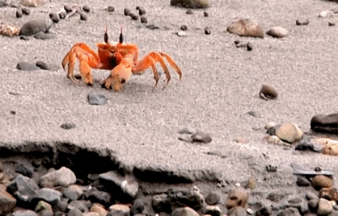

CRUSTACEOS
Los crustáceos son un extenso subfilo de artrópodos parafilético, con más de 67 000 especies. Incluyen varios grupos de animales comestibles, como las langostas, los cangrejos, los langostinos, los camarones y los percebes.
